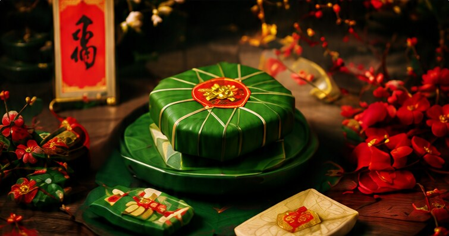

Phong tục
Tìm hiểu ý nghĩa, phong tục và những giá trị văn hóa đặc sắc trong ngày Tết cổ truyền của dân tộc.

Tết Nguyên Đán là dịp lễ quan trọng nhất trong năm của người Việt, đánh dấu thời khắc chuyển giao giữa năm cũ và năm mới theo lịch âm. Đây là dịp để mọi người sum vầy bên gia đình, tưởng nhớ tổ tiên và cầu mong một năm mới an khang, thịnh vượng.
Tết không chỉ là thời khắc chuyển giao đất trời, mà còn là sợi dây gắn kết tình thân, gìn giữ những giá trị truyền thống ngàn đời của dân tộc Việt Nam.
Người Việt quan niệm “tống cựu nghinh tân”, dọn dẹp nhà cửa sạch sẽ để xua đi những điều không may và đón chào những điều tốt lành trong năm mới.
Đây là phong tục quan trọng, thể hiện lòng hiếu thảo và đạo lý “uống nước nhớ nguồn”. Mâm cỗ ngày Tết được chuẩn bị chu đáo để dâng lên tổ tiên.
Phong bao lì xì đỏ trao cho trẻ nhỏ và người già mang ý nghĩa chúc phúc, cầu mong sức khỏe và may mắn, chứ không nằm ở giá trị món tiền bên trong.
Cùng một cái Tết nhưng mâm cỗ mỗi miền lại mang dấu ấn riêng của khí hậu, sản vật và nếp sống địa phương.
| Miền | Bánh | Món đặc trưng |
|---|---|---|
| Bắc | Bánh chưng | Thịt đông, dưa hành, giò lụa |
| Trung | Bánh tét | Nem chua, tré, thịt ngâm mắm |
| Nam | Bánh tét | Thịt kho hột vịt, canh khổ qua |
Lưu ý. Ngày cúng ông Công ông Táo rơi vào 23 tháng Chạp âm lịch, trước Giao thừa đúng một tuần.
Mẹo. Chuẩn bị sẵn phong bao lì xì và một ít tiền lẻ mới trước ngày 28 Tết để không phải chạy đôn đáo vào phút chót.
Dù cuộc sống hiện đại có đổi thay, Tết Nguyên Đán vẫn giữ nguyên vai trò là dịp để mỗi người Việt trở về — về với gia đình, với cội nguồn, và với những giá trị đã nuôi dưỡng mình.